October 13 - 17, 2013
| I spent most of a week in Hot Springs for
training in my new job (which is great, BTW!) Just as I was about to
leave OKC for the six-hour drive, I got a migraine. I almost never
get them anymore, but I imagine it was the stress of changing jobs that
overcame me. Anyway, I took a bunch of medicine, asked people to
pray for me, strapped ice on my forehead, and hit the road.
The medicine kicked in after about 2 hours so I was starting to feel a little better by the time I reached the Bloomer Bunch in Gore. I was able to enjoy watching Brodie run wild for about two hours, then it was time to finish the drive to Hot Springs. Hot Springs is a nice little town. My new company, TLI, is a very
nice place too. Friendly people, interesting work, and I get to work
out of my house - perfect. I was pretty focused on learning while I
was there, but on my last evening I did some tourist-ing and played with
my camera. It is a very scenic area. |
|
|
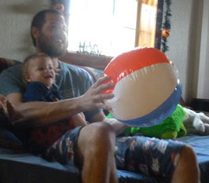 |
|
| Brodie, being adorable - as always!
|
This was a rare moment of stillness while Keith threw the beach ball at Desirae. Mostly he was climbing on Keith as if he was a Jungle Gym! |
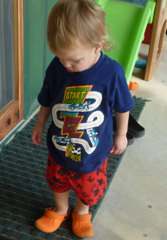 |
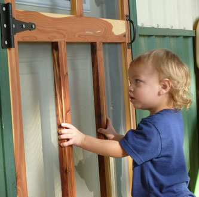 |
| Hmm, something doesn't feel right about these shoes...
|
Keith had just made this screen door that morning, so this is Brodie's first encounter with it. You can see the wheels turning. I'm told he's an old hand at slamming it now! |
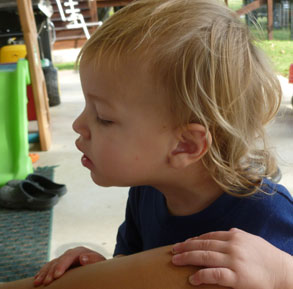 |
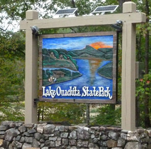 |
| Here his Mom tries to eat a bowl of stew, but he insists on getting every single pea from her bowl. It could have been worse - he could have asked for the meat! |
Someone told me that Lake Ouachita was the prettiest of the surrounding lakes so I took a drive out there on my last evening. It was very pretty. |
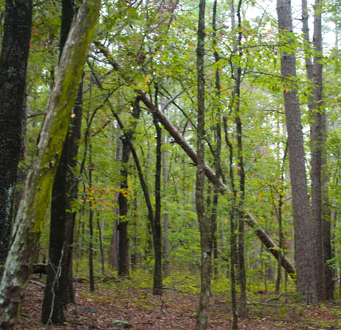 Walking on a short hike |
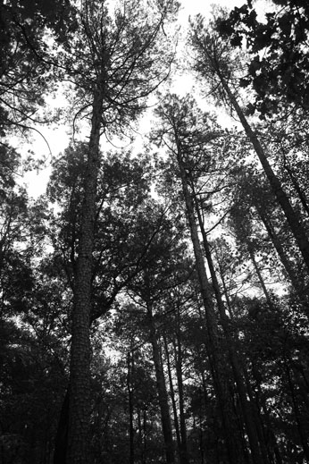 |
| Trying to get creative with the towering trees | |
|
Next I visit the "Three Sisters Springs" |
|
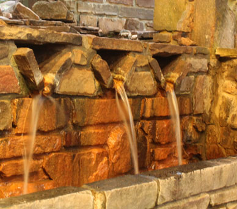 |
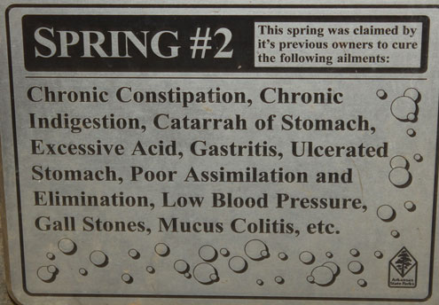 |
| The water from all three springs comes out here. Each has it's
own distinct 'medicinal qualities'. |
You'd better believe I took a big drink of Spring #2!! |
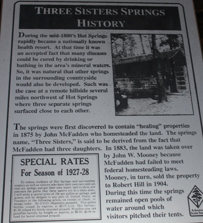 |
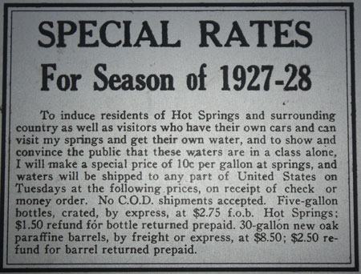 |
| Some history on the springs, if you're curious. | Close-up of the special rates they offered back in 1927 |
| Looking down bath house row. I didn't get the chance to use one of
the bath houses, but they sure looked inviting. |
Here was a particularly lovely old building. There were lots of them
in this well-cared-for downtown. I look forward to going back to Hot Springs again. |